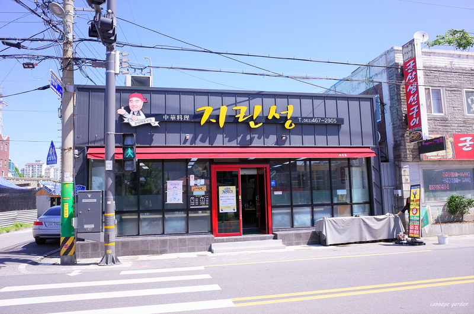
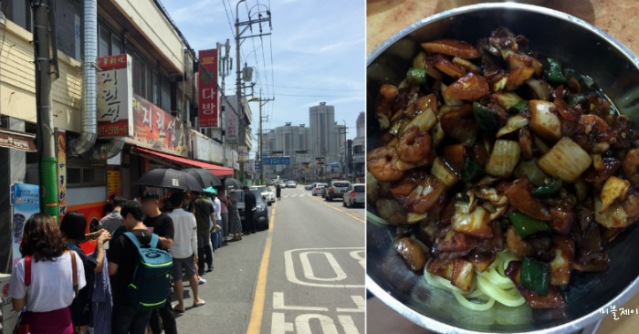
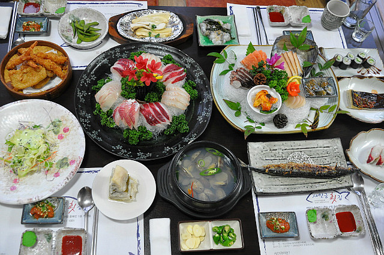
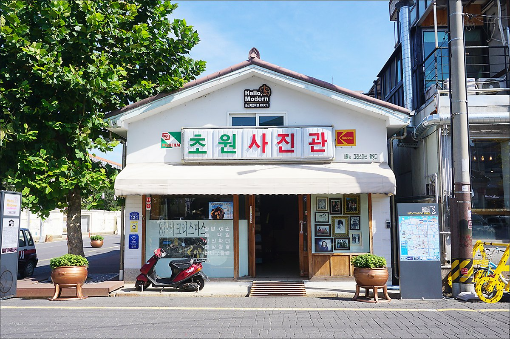
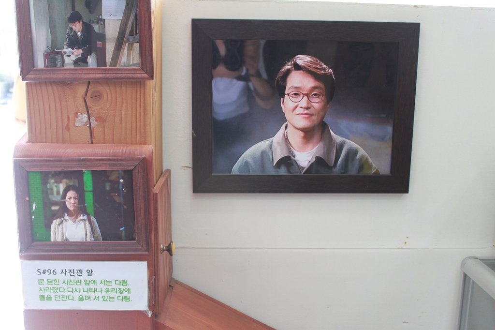
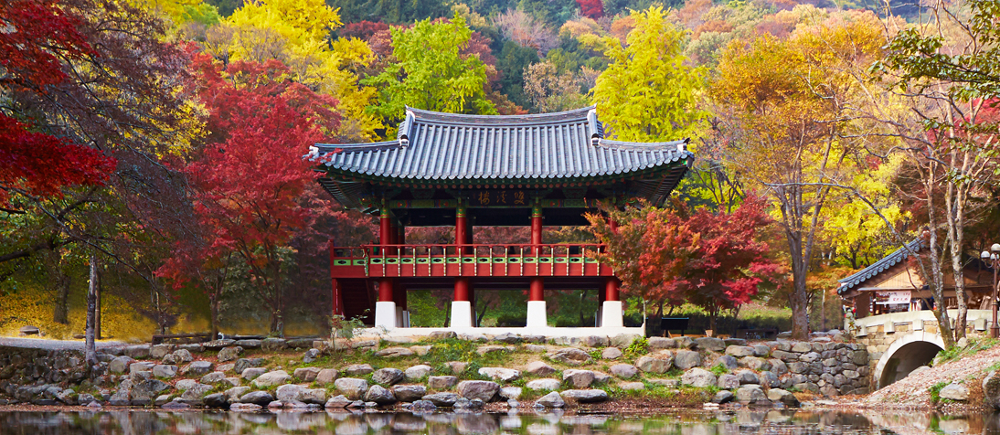
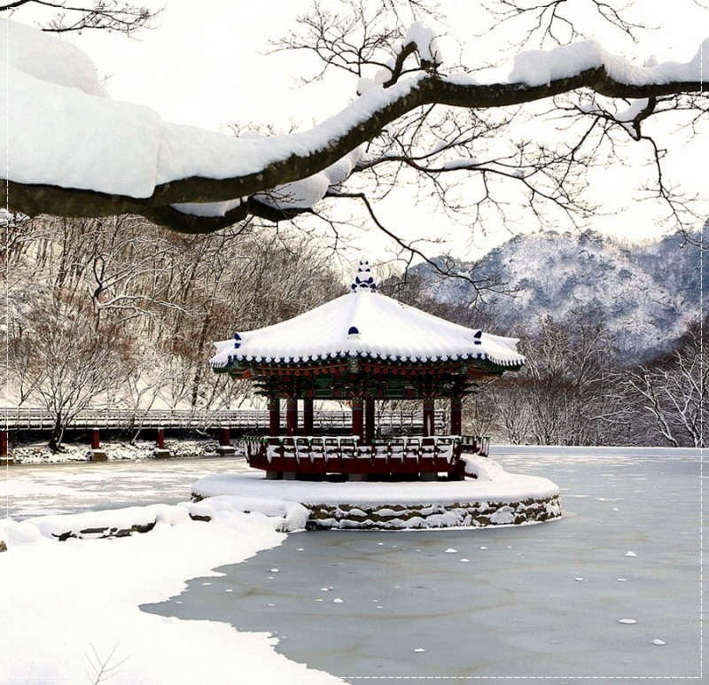
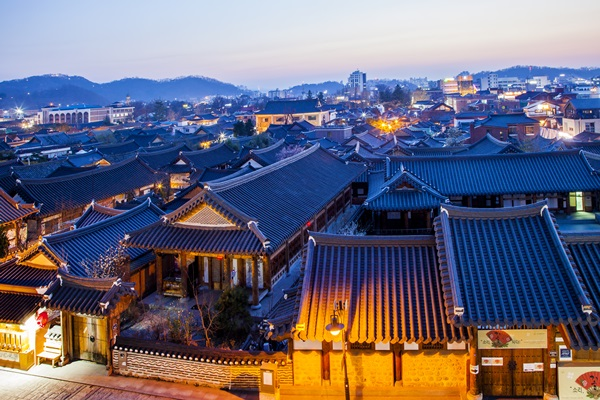
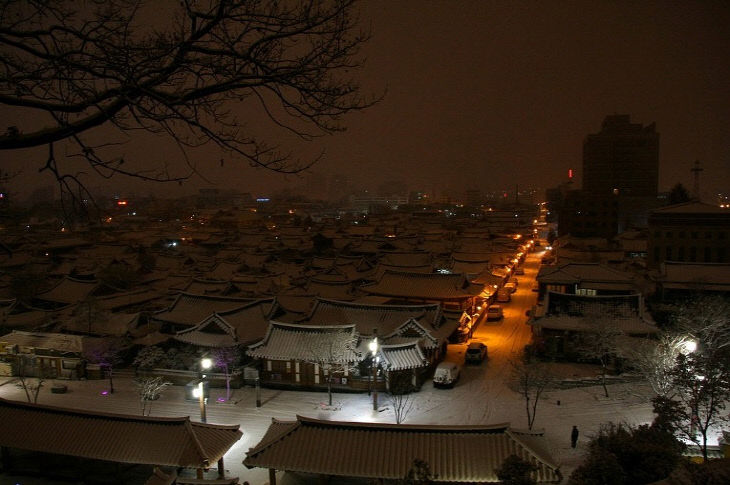

자연! 그것이 우리가 추구하는 곳
끊임없이 꽃이 피어나고 가뭄에도 꿋꿋이 견디어 내는 모습이 참을성 많고 끈기 있는 전북도민들의 기상을 상징하는 도시입니다. 예로부터 반가운 사람이나 소식이 올 것을 알려주는 새로 여겨져 우리 도에 기쁜 일이 많이 생기기를 바라는 의미를 가진 도시입니다. .
Food
"지린성"
 ⭐️⭐️⭐️⭐️⭐️
군산 맛집 중 가장 유명한 군산 지린성.
백종원이 다녀온 후 인기가 대박이난 식당.
군산에서 고추짬뽕으로 가장 유명한 곳! 지린성이다.
평일, 저녁시간 상관없이 항상 많은 손님들이 줄을 서서 먹을 정도로 인기가 많은 집입니다.
매콤하고 얼큰한 고추짬뽕의 푸짐함과 탱글탱글한 면발의 살아있는 느낌은 계속해서 손님들의 발길을 이끕니다.
또 빠질 수 없는 쟁반짜장과 잡채밥은 그 양에서부터 놀라움이 가득합니다.
군산 맛집 지린성에서 그 맛을 느낄 수 있습니다 ^^
지린성이 워낙 매워서 옆에 아이스크림 가게에서 쿠폰을 주니 챙겼다가 먹으러 가는 것을 추천드립니다 ㅎ 추가적으로 바빠서 사장님이 좀 싸납습니다.
새만금 횟집
⭐️⭐️⭐️⭐️
새만금 횟집은 전라도 군산시 비응항에 있는 맛집입니다.
비응항은 군산의 서쪽 초입에 위치한 항구로 상당히 큰 포구 입니다.
수많은 어선들이 정박되어있고 만화같은 바다 풍경을 구경할 수 있습니다.
새만금 횟집은 코스요리 정량을 주문하면 메인 회는 무한리필 !
회를 좋아하는 사람들은 환장 ~~
해변가에 있어 좋은 뷰를 구경하고 어선이 많아 활기가 넘칩니다.
마지막으로 먹는 매운탕과 생선까스는 환장적입니다.
일단 회가 무한리필이라 회를 좋아하시면 전날 굶고 가시는 것 추천드립니다.
View
'초원사진관'
 ⭐️⭐️⭐️⭐️
1998년 1월에 개봉한 영화 "8월의 크리스마스"의 촬영 장소. 영화는 불치병을 앓는 30대 중반의 사진사 정원(한석규)이 주차단속원 다림(심은하)을 만나면서 마지막으로 사랑에 대한 기억을 엮어가는 과정을 그렸습니다. 20년이 지난 영화지만 아직도 많은 이들에게 언급되는 영화도 기억되고 있습니다. 영화 속 모습 그대로를 볼 수 있어 관광객들에게 인기가 좋은 명소로 알려져있습니다.
과거 짝사랑 이나 사랑하는 사람과 가는 것이 어떨 까요?
"내장산"
 ⭐️⭐️⭐️⭐️
호남 5대의 명산 중 하나이자 한국을 대표하는 8경 중 하나로 손꼽히는 곳으로 1971년 우리나라 8번째 국립공원으로 지정된 곳입니다.
면적은 80.708k㎡이다. 신선봉(763m)을 주봉으로 하는 내장산은 봉우리들의 높이가 700m 내외지만 봉우리 정상이 저마다 독특한 기암으로 이루어져 있어 예로부터‘호남의 금강’이라 불린 곳입니다
.
내장산은 원래 본사인 영은사의 이름을 따서 영은산으로 불리다가 산 안에 감춰진 것이 무궁무진하다고 하여내장산으로 불리게 되었다.
가울 풍경뿐만 아닌 겨울 풍경도 어마무시 한 곳입니다.
Landmark
전주 한옥 마을
 ⭐️⭐️⭐️⭐️⭐️
전주 ‘한옥마을’은 전주시 완산구 교동, 풍남동 일대 7만 6320평에 700여 채의 전통한옥으로 이루어진 마을입니다. 일제강점기 시대에 일제가 성곽을 헐고 도로를 뚫은 뒤 일본 상인들이 성안으로 밀고 들어오자 이 모습에 우리의 조상들의 반발로 자연스럽게 형성되어 현재까지 당신의 모습을 간직하고 있는 마을입니다..
날 잡아 친구들과 계절에 상관없이 가는것 어떠신가요?